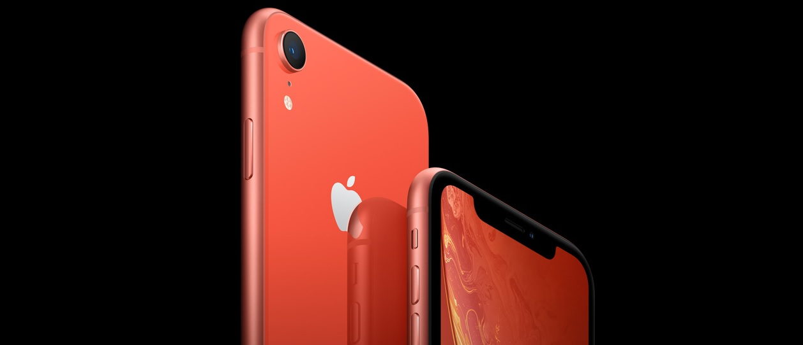
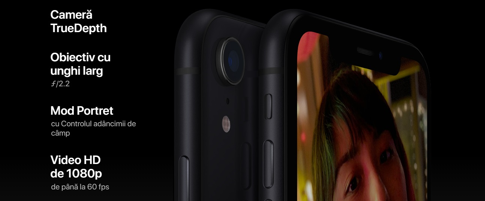
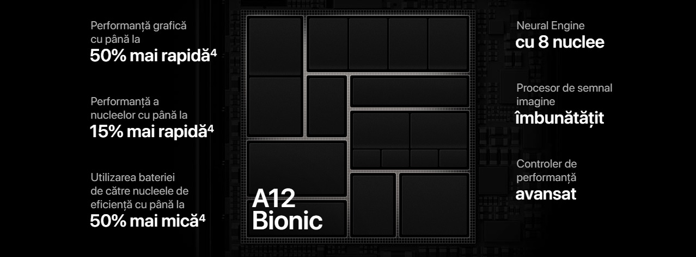

|
Ecran Liquid Retina complet nou - cel mai avansat LCD din domeniu. Face ID și mai rapid. Cel mai inteligent și mai puternic cip întâlnit la un smartphone. Și un sistem revoluționar de cameră. iPhone XR. Este superb oricum l-ai privi. 
Îți prezentăm Liquid Retina. Noul ecran de pe iPhone XR reprezintă cel mai avansat LCD din domeniu. Designul retroiluminat inovator permite ecranului să se întindă până la colțuri. Așa că poți vedea culori realiste de la o margine superbă la alta. Materiale excepționale. Cea mai rezistentă fațadă din sticlă văzută vreodată la un smartphone. Benzi-contur de cea mai mare precizie, din aluminiu folosit în aeronautică. Rezistență la apă și praf.2 Și cinci culori noi superbe. 
Proces de aplicare a culorii în șapte straturi. Culorile de finisaj pentru spatele din sticlă sunt obținute folosind un proces avansat care are ca rezultat culori intense și vii. Benzi-contur din aluminiu folosit în aeronautică. Aliajul conceput special de Apple este fabricat cu mare precizie, pentru a crea benzi structurale și este anodizat pentru a se potrivi perfect culorii de pe spatele din sticlă. Încărcare wireless. Spatele din sticlă permite ca dispozitivul iPhone XR să poată fi încărcat simplu și wireless. 
Face ID Avansat. Securitatea e simplă când fața ta e parola ta. Îți poți debloca iPhone-ul, te poți autentifica în aplicații, conturi și multe altele, dintr-o privire. Este cea mai sigură autentificare facială văzută vreodată la un smartphone. Iar acum e și mai rapidă. Cip inteligent A12 Bionic. Acesta este cel mai puternic și mai inteligent cip care a intrat vreodată în construcția unui smartphone, împreună cu procesorul nostru Neural Engine de ultimă generație. Pentru experiențe uimitoare de realitate augmentată. Portrete incredibile cu controlul adâncimii de câmp. Plus viteză și fluiditate în toate operațiunile. Niciun alt telefon nu se compară cu iPhone. Fiecare decizie luată în conceperea iPhone-ului, îl face să se evidențieze în fața tuturor. De la cum este fabricat, la modul în care am încorporat confidențialitatea și securitatea încă de la început, la modurile inovatoare în care reciclăm componentele sale. |